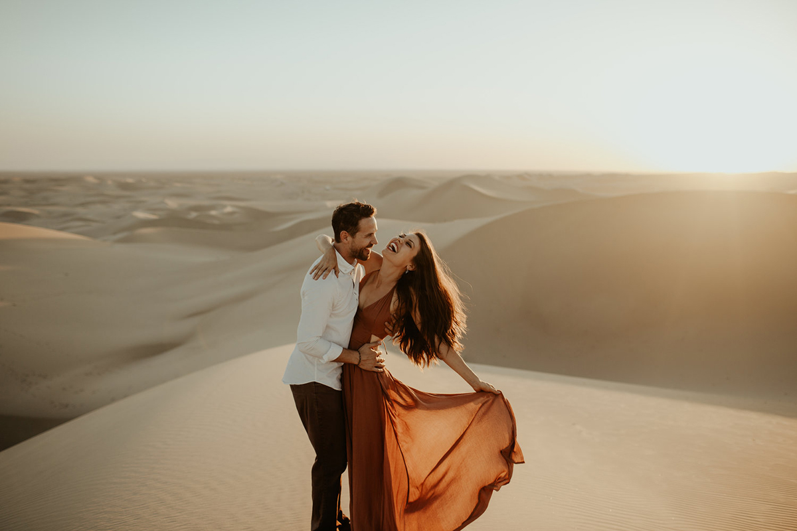

Serviços

De uma simples Sessão fotográfica em Estúdio à Fotoreportagem e Vídeoreportagem de Casamentos e eventos festivos, temos à disposição, todos os serviços de fotografia e vídeo necessários, para garantir um registo profissional e de qualidade, de todos os momentos mágicos e especiais. Serviços disponíveis:
- Fotografia de Casamento
- Vídeo de Casamento
- Sessão Fotográfica de Solteiros
- Sessão Pós-Casamento
- Album de Fotografia de Casamento
- Videoclip do Casamento
- Impressão de Fotografias
- Filme Highlights